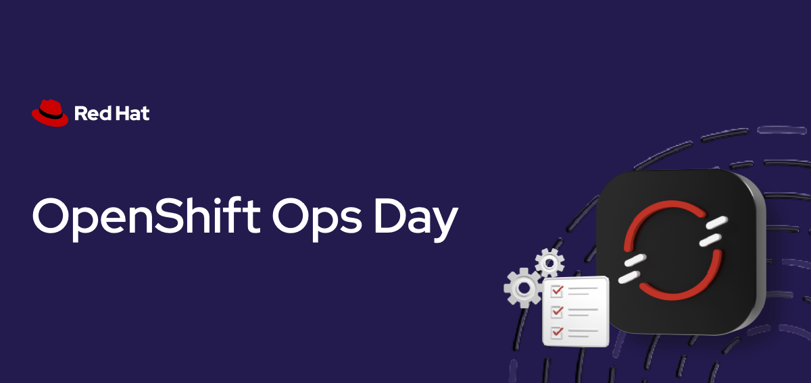

Setup & Overview
Duration: 15-20 minutes
Format: Hands-on demonstration
Console Access
-
Username:
{openshift_cluster_admin_username} -
Password:
{openshift_cluster_admin_password} -
Console: {openshift_cluster_console_url}[window=blank]
| We recommend using the OCP Console tab within this Showroom interface as it is easier to follow along. |

Let’s Go
You have cluster admin access to a live OpenShift cluster. Let’s make sure everything’s working - click the commands below:
oc whoamiYou should see your admin user.
oc get nodesThree nodes, all Ready.
oc get clusterversionThat’s your cluster version and update channel. You’re in.
About This Workshop
Not every workload can be containerized immediately - legacy applications, databases with complex storage requirements, Windows services, or applications that aren’t ready for the container journey yet. OpenShift Virtualization lets you run those workloads as virtual machines alongside containers on the same platform.
This hands-on workshop focuses entirely on OpenShift Virtualization. You’ll create VMs using a cloud-style interface, see how they integrate with Kubernetes primitives, perform live migrations, clone VMs, take snapshots for rollback protection, and understand how to manage virtual machines using the same tools you use for containers.
Your Workshop Interface
Your workshop runs in a split-panel interface with the following panels:
-
Left panel - Instructions (what you’re reading now)
-
Right panel - Tabbed workspace with your cluster tools
-
Draggable divider - Drag the border between panels to resize
| Tab | What it is |
|---|---|
OCP Console |
The OpenShift web console - where you’ll create and manage virtual machines, monitor their performance, and perform lifecycle operations. |
Terminal |
A web-based terminal pre-connected to your cluster. Run |
| Highlighted command blocks are clickable - they switch to the Terminal tab and execute automatically. |
What You’ll Learn
In this focused workshop, you’ll gain hands-on experience with:
| Topic | What you’ll do |
|---|---|
VM Creation |
Create a RHEL 9 virtual machine using the console with InstanceTypes (cloud-style compute profiles) |
Kubernetes Integration |
See how VMs run as pods and integrate with Services, Routes, and monitoring |
Live Migration |
Move running VMs between nodes with zero downtime - essential for maintenance windows |
VM Cloning |
Create full copies of VMs for dev/test environments or golden image deployment |
Snapshots & Restore |
Take point-in-time snapshots and roll back VMs after failed patches or configuration changes |
Unified Management |
Use the same |
Access the OpenShift Console
The OpenShift Web Console provides a unified view of your entire cluster, including the virtualization management interface.
You can access the console in two ways:
-
OCP Console tab - Click the OCP Console tab at the top of this workshop. The console is embedded directly in the workshop interface.
-
Separate browser tab - For a full-screen experience, open the console in a separate browser tab: {openshift_cluster_console_url}[window=blank]
| ctrl + click on the URL to open URLs in a new tab. |
Administrator login credentials:
Username: |
{openshift_cluster_admin_username} |
Password: |
{openshift_cluster_admin_password} |
| If you see an authentication error, click Try Again or reload the tab and try again. |
Verify Virtualization is Installed
OpenShift Virtualization should already be installed on your cluster. Let’s verify:
oc get csv -n openshift-cnv | grep kubevirtExpected output shows Succeeded:
kubevirt-hyperconverged-operator.v4.20.x OpenShift Virtualization 4.20.x Succeeded
You can also verify in the console:
-
Switch to the Administrator perspective (top-left dropdown)
-
Navigate to Fleet Virtualization (or Virtualization if ACM is not enabled) in the left sidebar
-
You should see the virtualization overview showing VirtualMachines and related resources